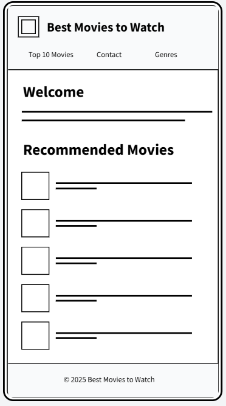
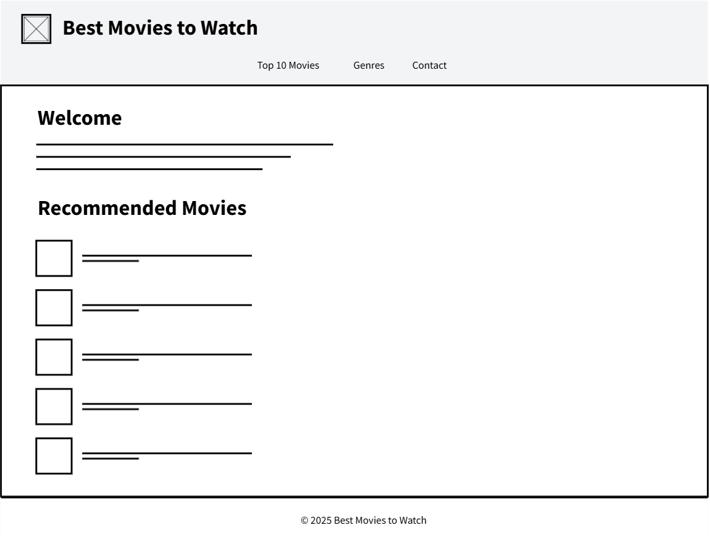

Best Movies to Watch
This name reflects the site's purpose—to help visitors discover great films across different genres and time periods. It's simple, memorable, and relevant to anyone looking for movie recommendations.
Optional domain: bestmoviestowatch.net
The purpose of this website is to share movie recommendations and organize them in an engaging and user-friendly format. The site will include a Top 10 list, genre-based suggestions, and a contact form where visitors can suggest their favorite movies. It's designed to be responsive and interactive using HTML, CSS, and JavaScript.
Primary Color: Deep Blue (#1E3A8A) - used for headings and navigation.
Secondary Color: Bright Gold (#FACC15) - used for highlights, buttons, and accent borders.
Background Color: Light Gray (#F9FAFB) - used for the main page background.
Text Color: Dark Gray (#1F2937) - used for body text.
Mobile View:
Desktop View:
The homepage wireframe shows a simple layout with a header, navigation bar, featured movies section, and footer. The mobile layout stacks elements vertically, while the desktop layout displays sections side by side for better visual flow.